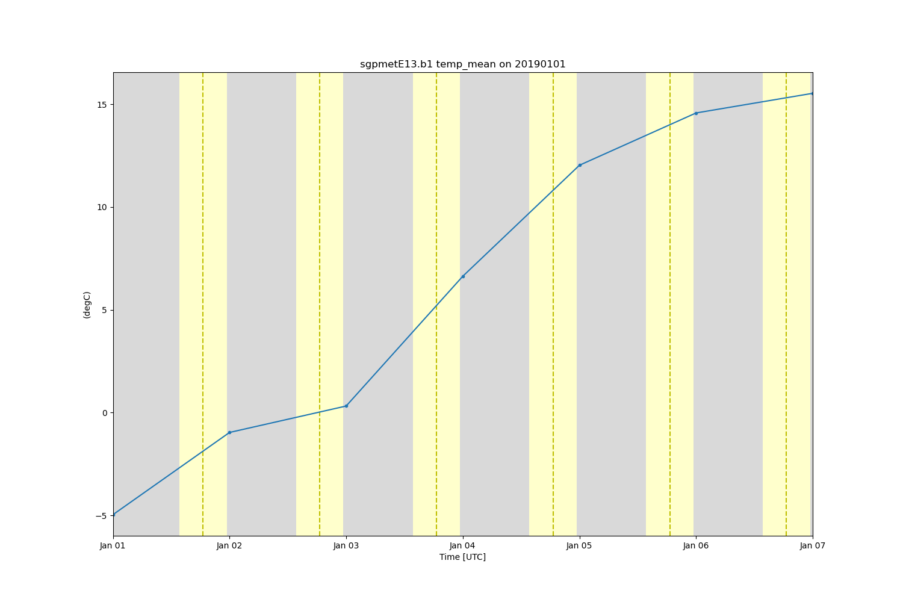

Note
Click here to download the full example code
Calculate and plot daily daytime temperature averages#
Example of how to read in MET data and plot up daytime temperature averages using the add_solar_variable function
Author: Adam Theisen
Out:
/usr/share/miniconda3/envs/act-docs/lib/python3.10/site-packages/xarray/core/common.py:1120: UserWarning: Passing ``keep_attrs`` to ``resample`` has no effect and will raise an error in xarray 0.20. Pass ``keep_attrs`` directly to the applied function, e.g. ``resample(...).mean(keep_attrs=True)``.
warnings.warn(
/home/runner/work/ACT/ACT/act/plotting/plot.py:80: UserWarning: Could not discern datastreamname and dict or tuple were not provided. Using defaultname of act_datastream!
warnings.warn(
import matplotlib.pyplot as plt
import act
# Read in the sample MET data
obj = act.io.armfiles.read_netcdf(act.tests.EXAMPLE_MET_WILDCARD)
# Add the solar variable, including dawn/dusk to variable
obj = act.utils.geo_utils.add_solar_variable(obj)
# Using the sun variable, only analyze daytime data
obj = obj.where(obj['sun_variable'] == 1)
# Take daily mean using xarray features
obj = obj.resample(time='1d', skipna=True, keep_attrs=True).mean()
# Creat Plot Display
display = act.plotting.TimeSeriesDisplay(obj, figsize=(15, 10))
display.plot('temp_mean', linestyle='solid')
display.day_night_background()
plt.show()
obj.close()
Total running time of the script: ( 0 minutes 1.577 seconds)